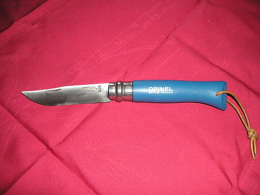
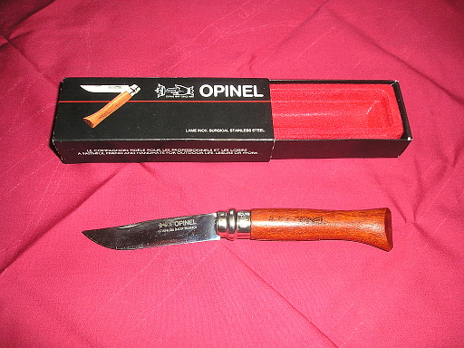
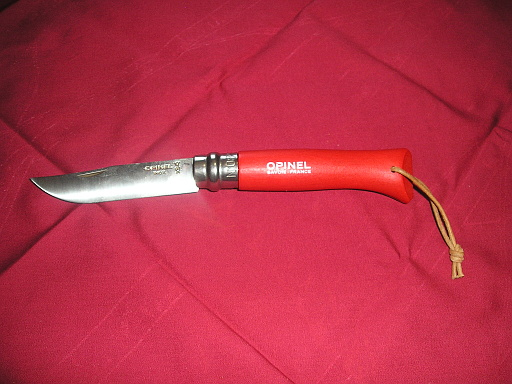
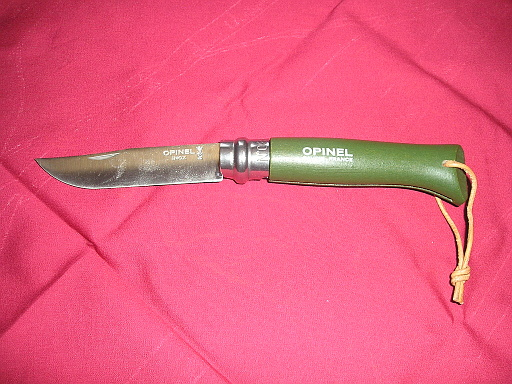
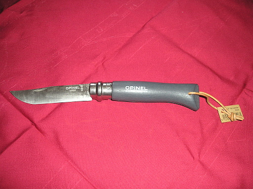
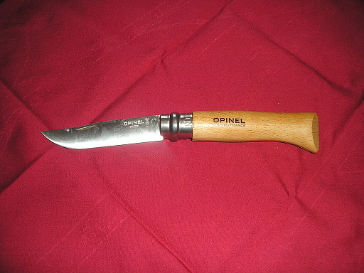

ここ 1 年ほど、キャンプをするためのアイテムを、ちょろちょろと買い揃えていました。ですが必要以上に買い揃えてしまったものがあります。
ナイフです。
キャンプに必要だなぁ、と思って最初に買ったのが OPINEL の #8 で、ハンドルがブルーのものです。色をブルーにしたのは可愛かったから！！

ところが珍しい OPINEL を見つけてから "必要なナイフを購入する" から "コレクション用にナイフを購入する" に軌道が変わってしまいました。OPINEL 6DX を amazon で見つけてしまったのですね。
通常 OPINEL のハンドルはブナの木で作られているのですが、OPINEL 6DX の場合はハンドルがローズウッドなのです。
我慢できなくなり、購入しました。

OPINEL 6DX はブレードが鏡面仕上げになっており、しかも化粧箱入り！！いかにもコレクション向けでした。ちなみにサイズは少し小さめの #6 です。
次にブルーがあるなら他の色も欲しいよなぁ、と #8 のステンレスの赤を買いました。

私が購入した時は amazon に在庫がなく、仕方がないのでマーケットプレイスで、定価でしかも配送料も支払って購入しました。通常 OPINEL は定価の 6 割から 7 割の値段で売られているのが普通なので、金銭的にはちょっと痛かったです。
次に購入したのが、#8 のステンレスでハンドルがカーキの色のものです。渋い色味で気に入ってます。

次に #8 のスレンレスで色がストレートのもの。この色も渋いです。

最初はストレートってどんな色だ？と思っていたのですが、濃いグレーのような色でした。
自分の場合、コレクション目的で購入したナイフだとはいえ、実用性があることを重視して購入しています。が、やはりコレクション目的で購入したナイフは、極力使いたくない。なのでノーマルな OPINEL の #8 も購入しました。ブレードは手入れが楽なようにステンレスです。

これで OPINEL のコレクションは一段落です。一段落？そうです。一段落です。ナイフのコレクションはまだまだ続きます。沼に足を突っ込んでしまっているのですね、すでに。